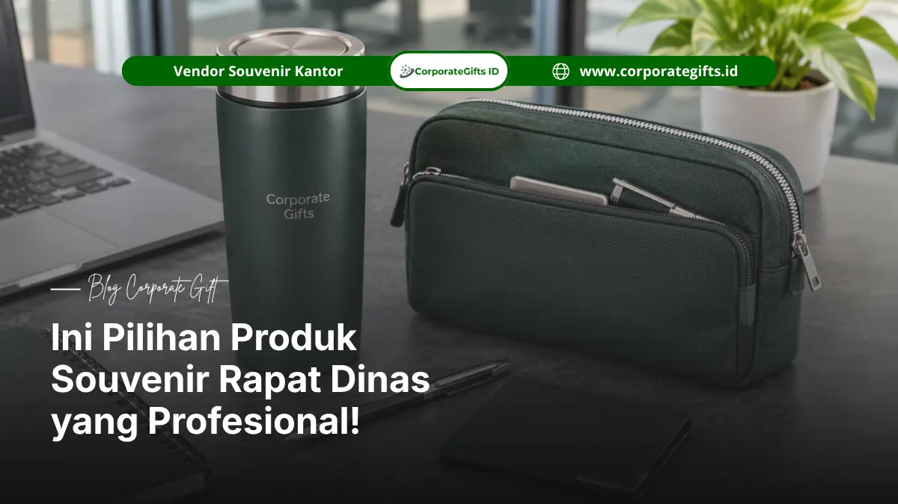

Corporate Gifts - Souvenir rapat dinas adalah merchandise yang dibagikan kepada peserta rapat perusahaan atau instansi, dipilih berdasarkan fungsi, anggaran, jumlah peserta, dan karakter acara.
Souvenir rapat dinas sebaiknya fungsional dan tampil profesional agar tetap digunakan peserta setelah rapat selesai.
Poin Kunci Perencanaan Souvenir Rapat Dinas:
- Rentang anggaran perencanaan adalah Rp35.000 sampai Rp150.000 per pcs.
- Kuantitas pesanan yang umum direncanakan berkisar 50 sampai 500 pcs.
- Pilihan produk yang lazim mencakup notebook hardcover, pulpen metal, tumbler stainless, pouch organizer, dan card holder premium.
- Logo, kemasan, dan jadwal produksi perlu diputuskan sebelum pemesanan dilakukan.
Mengapa Souvenir Rapat Dinas Perlu Dipilih dengan Tepat?
Souvenir rapat dinas mencerminkan profesionalisme penyelenggara dan memberi nilai guna bagi peserta, sehingga pemilihannya perlu menyesuaikan identitas perusahaan, jenis rapat, dan profil penerima.
Souvenir adalah salah satu benda yang paling lama berinteraksi dengan peserta setelah rapat berakhir.
Notebook yang dipakai setiap hari atau tumbler yang dibawa ke kantor akan terus memperlihatkan identitas penyelenggara kepada pemakainya dan orang di sekitarnya.
Karena itu, produk yang dipilih sebaiknya mewakili citra perusahaan atau instansi, bukan sekadar memenuhi kewajiban membagikan sesuatu.
Pemilihan yang kurang tepat biasanya terjadi dalam dua arah. Produk yang terlalu murah dapat memberi kesan kurang serius terhadap acara formal.
Produk yang terlalu mahal dapat melewati anggaran dan sulit dipertanggungjawabkan dalam laporan pengadaan.
Kebutuhan juga berbeda untuk setiap jenis rapat:
- Rapat internal bulanan cukup dengan produk sederhana yang fungsional.
- Rapat koordinasi lintas divisi atau cabang lebih cocok dengan produk yang mudah dibawa.
- Rapat formal dengan mitra eksternal membutuhkan tampilan yang lebih representatif dan kemasan yang rapi.
Apa Saja Rekomendasi Souvenir Rapat Dinas yang Profesional?
Pilihan souvenir rapat dinas yang umum dan profesional meliputi notebook hardcover, pulpen metal, tumbler stainless, pouch organizer, dan card holder premium yang dapat diberi logo.
Notebook Hardcover Custom
Notebook hardcover cocok untuk rapat formal dan kegiatan administrasi karena peserta langsung dapat menggunakannya untuk mencatat.
Cover dapat diberi logo atau identitas perusahaan, dan notebook mudah dipadukan dengan pulpen sebagai paket sederhana yang tetap terlihat rapi.
Pulpen Metal Premium
Pulpen metal memiliki tampilan formal dan cocok untuk peserta rapat, pimpinan, maupun mitra kerja.
Produk ini dapat dibagikan sebagai produk tunggal atau sebagai pelengkap gift set bersama notebook.
Spesifikasi tinta dan mekanisme tulis perlu diperiksa melalui sampel sebelum produksi massal.
Tumbler Stainless
Tumbler stainless berguna untuk aktivitas kerja sehari-hari dan tersedia dalam berbagai ukuran serta model.
Karena dipakai berulang, tumbler cocok untuk souvenir perusahaan yang diharapkan memiliki masa pakai panjang.
Penyelenggara perlu menentukan kapasitas, warna, dan teknik branding yang sesuai dengan permukaan produk.
Pouch Organizer
Pouch organizer membantu peserta menyimpan aksesori kerja seperti kabel, charger, atau alat tulis.
Produk ini cocok untuk paket rapat yang lebih praktis, dan warnanya dapat disesuaikan dengan identitas visual perusahaan.
Card Holder Premium
Card holder premium cocok untuk peserta dari kalangan profesional karena dapat menyimpan kartu identitas atau kartu bisnis.
Produk ini memberi kesan formal tanpa harus menggunakan paket besar, sehingga relevan untuk anggaran yang terbatas namun tetap menuntut tampilan rapi.
Bagaimana Menyesuaikan Souvenir Rapat Dinas dengan Anggaran?
Anggaran souvenir rapat dinas dapat disesuaikan pada rentang perencanaan Rp35.000 sampai Rp150.000 per pcs dengan memilih produk tunggal atau paket kombinasi sesuai kebutuhan.
Rentang tersebut adalah acuan perencanaan, bukan harga pasti seluruh produk. Harga aktual bergantung pada spesifikasi, bahan, teknik branding, kemasan, kuantitas, dan tenggat produksi, sehingga perlu dikonfirmasi melalui penawaran resmi.
Anggaran Rp35.000 sampai Rp50.000 per Pcs
Pada rentang ini, fokuskan anggaran pada satu produk fungsional seperti notebook atau pulpen metal sesuai spesifikasi. Perhatikan juga biaya branding dan kemasan karena keduanya turut menentukan total biaya per pcs.
Anggaran Rp50.000 sampai Rp100.000 per Pcs
Pada rentang ini, penyelenggara dapat mempertimbangkan kombinasi dua produk. Gunakan kemasan sederhana tetapi rapi, lalu sesuaikan komposisi paket dengan profil peserta.
Anggaran Rp100.000 sampai Rp150.000 per Pcs
Pada rentang ini, paket dapat dibuat lebih lengkap dengan material dan finishing yang lebih premium. Kemasan khusus dapat ditambahkan bila acara menuntut kesan yang lebih representatif.
| Rentang anggaran per pcs | Karakter paket | Contoh komposisi (ilustratif) | Kesesuaian acara |
|---|---|---|---|
| Rp35.000 - Rp50.000 | Produk tunggal fungsional | Notebook atau pulpen metal | Rapat rutin dan rapat terbatas |
| Rp50.000 - Rp100.000 | Kombinasi dua produk | Notebook dan pulpen, atau tumbler dan pouch | Rapat koordinasi dan pertemuan lintas divisi |
| Rp100.000 - Rp150.000 | Paket lengkap premium | Gift set dengan kemasan khusus | Rapat formal, tamu undangan, dan mitra kerja |

Tumbler stainless dan pouch organizer custom logo sebagai pilihan souvenir rapat dinas fungsional.
Berapa Jumlah Souvenir yang Perlu Disiapkan untuk Peserta Rapat?
Jumlah souvenir rapat dinas mengikuti daftar peserta ditambah cadangan, dengan perencanaan berbeda untuk skala pesanan kecil, menengah, dan besar dari 50 sampai 500 pcs.
Pesanan 50 sampai 100 Pcs
Skala ini cocok untuk rapat terbatas atau rapat manajemen. Siapkan jumlah cadangan untuk tamu tambahan atau peserta yang baru dikonfirmasi mendekati hari acara.
Pesanan 100 sampai 300 Pcs
Skala ini umum untuk rapat koordinasi dan pertemuan lintas divisi. Pada jumlah ini, keseragaman spesifikasi menjadi perhatian utama karena produk dari batch berbeda dapat memiliki perbedaan warna atau finishing.
Pesanan 300 sampai 500 Pcs
Skala ini membutuhkan perencanaan produksi dan distribusi yang lebih terstruktur. Pastikan desain dan sampel disetujui sebelum produksi massal dimulai, serta tentukan titik distribusi agar souvenir sampai tepat waktu.
Apa Kesalahan Umum dalam Memilih Souvenir Rapat Dinas?
Kesalahan umum dalam memilih souvenir rapat dinas meliputi produk kurang fungsional, anggaran tidak memperhitungkan branding dan kemasan, spesifikasi tidak seragam, serta jadwal produksi terlalu mepet.
Kesalahan pertama adalah memilih produk hanya berdasarkan harga tanpa menilai kegunaannya. Produk yang tidak terpakai cepat dilupakan, sehingga logo penyelenggara tidak mendapat paparan sesudah acara.
Kesalahan kedua adalah menghitung anggaran hanya dari harga produk. Biaya branding, kemasan, dan pengiriman dapat mengubah total secara signifikan dan sebaiknya masuk dalam perhitungan sejak awal.
Kesalahan ketiga adalah tidak meminta sampel atau persetujuan desain. Tanpa persetujuan tertulis, risiko perbedaan warna, ukuran logo, dan finishing meningkat pada pesanan massal.
Kesalahan keempat adalah menyampaikan tanggal acara terlambat. Waktu persetujuan desain, produksi, pemeriksaan kualitas, dan pengiriman perlu dihitung mundur dari tanggal rapat.
Apa yang Perlu Dipersiapkan Sebelum Memesan Souvenir Rapat Dinas?
Sebelum memesan souvenir rapat dinas, penyelenggara perlu menetapkan spesifikasi produk, identitas branding, jenis kemasan, dan jadwal produksi agar pesanan berjalan sesuai tanggal acara.
Menentukan Spesifikasi Produk
Tentukan jenis, bahan, ukuran, warna, dan fungsi produk. Spesifikasi yang jelas memudahkan penyusunan penawaran dan mencegah perbedaan pemahaman antara penyelenggara dan pemasok.
Menyiapkan Identitas Branding
Siapkan file logo dalam format yang layak cetak, nama kegiatan, atau identitas penyelenggara. Tentukan juga posisi dan ukuran logo pada produk.
Menentukan Kemasan
Pilih kemasan sesuai karakter acara, misalnya box, pouch, sleeve, atau kemasan individual. Kemasan yang rapi membantu produk tiba dalam kondisi baik dan memudahkan distribusi kepada peserta.
Menyesuaikan Jadwal Produksi
Susun jadwal yang mencakup persetujuan desain, produksi, pemeriksaan kualitas, dan pengiriman. Jangan menganggap produksi dapat dipercepat tanpa konfirmasi kapasitas aktual dari pemasok.
Paket seminar dan konferensi yang relevan dapat dilihat pada halaman paket seminar kit perusahaan.
Souvenir Rapat Dinas untuk Kebutuhan Perusahaan dan Instansi
Souvenir rapat dinas untuk perusahaan swasta menekankan identitas brand, sedangkan untuk BUMN dan instansi pemerintah menekankan kesesuaian spesifikasi, keseragaman, dan ketentuan pengadaan yang berlaku.
Kebutuhan Perusahaan Swasta
Perusahaan swasta umumnya menekankan identitas brand dan kegunaan produk. Souvenir cocok untuk rapat tahunan, meeting manajemen, atau pertemuan dengan mitra bisnis.
Karena keputusan pengadaan relatif lebih fleksibel, komposisi paket dapat disesuaikan dengan tujuan komunikasi perusahaan.
Kebutuhan BUMN dan Instansi Pemerintah
BUMN dan instansi pemerintah umumnya menekankan tampilan formal, keseragaman, dan kesesuaian spesifikasi.
Penyelenggara perlu memperhatikan ketentuan pengadaan dan anggaran yang berlaku di organisasinya.
| Aspek | Perusahaan swasta | BUMN dan instansi pemerintah |
|---|---|---|
| Penekanan utama | Identitas brand dan nilai guna | Tampilan formal dan keseragaman |
| Fleksibilitas komposisi | Relatif luas | Mengikuti ketentuan pengadaan |
| Dokumen pendukung | Penawaran dan persetujuan desain | Penawaran sesuai spesifikasi dan ketentuan internal |
Pilihan produk lain tersedia di katalog merchandise perusahaan.
Pilih Souvenir Rapat Dinas yang Sesuai dengan Kebutuhan Acara
Souvenir rapat dinas yang tepat ditentukan oleh fungsi produk, citra penyelenggara, anggaran per pcs, jumlah peserta, dan tenggat acara yang sudah dikonfirmasi.
Mulailah dari tiga keputusan dasar: siapa penerimanya, berapa anggaran per pcs, dan kapan acara berlangsung.
Setelah itu, pilih produk yang paling relevan dengan aktivitas peserta dan tentukan apakah paket tunggal atau kombinasi lebih sesuai. Lihat berbagai pilihan pada halaman produk corporate gifts.
FAQ (Pertanyaan Seputar Souvenir Rapat Dinas)
Kesimpulan
Pemilihan souvenir rapat dinas sebaiknya mempertimbangkan fungsi produk, citra penyelenggara, anggaran per pcs, jumlah peserta, dan tenggat acara.
Gunakan rentang Rp35.000 sampai Rp150.000 per pcs sebagai acuan perencanaan, lalu konfirmasi harga aktual melalui penawaran.
Konsultasikan kebutuhan souvenir rapat dinas melalui WhatsApp Corporate Gifts. Sampaikan jumlah pesanan, anggaran per pcs, pilihan produk, dan tanggal acara untuk mendapatkan rekomendasi paket serta penawaran yang sesuai.

Ditulis oleh: Arinda Zakia
Senior Corporate Gifting Specialist & Lead Content StrategistSpesialis kurasi hadiah korporasi VIP dan strategi pengadaan corporate merchandise dengan pengalaman 7+ tahun di Indonesia.
Lihat Profil Lengkap & Panduan Lainnya